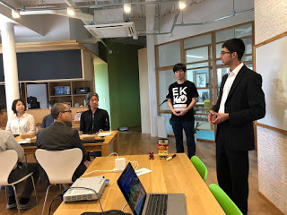
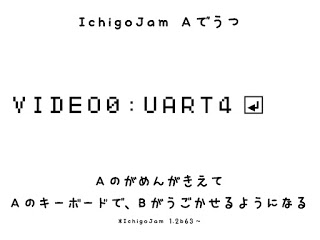
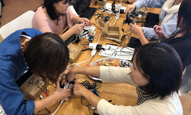
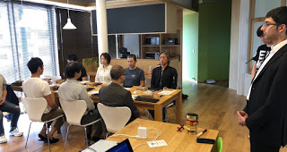
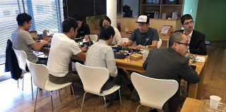

ZENIT ARCHIVE
ZenIT and IoT Programming for Beginners with IchigoSoda
Oct 2, 2018
Cross-posted at http://fukuno.jig.jp/2262
鯖江の会社、ウォンツとイベント「はじめてのIoTプログラミング with ZenIT」
IchigoSoda (IchigoJam x sakura.io) を途中からZenIT ペアプログラミングスタイルにして、アプリとIoTづくりと学ぶ体験会。
At Wants, a company in Sabae, we did an introductory ZenIT IoT programming seminar using IchigoSoda (IchigoJam x sakura.io).
手を組んで、心を静かに、永平寺エボリューション大使あみるによる座禅のレクチャーからスタート。
We shaped our hands, quieten down our minds, starting with Zazen meditation from Amil.
座禅、椅子バージョン。
Zazen: chair version.
IchigoJamの配線も大事な体験。
We also had an important experience setting up the wires for IchigoJam
ペアプログラミングで学ぶ、アプリづくりの基本と、IoTづくりの基本。
体験と共に紹介した、こどもプログラミングの現状、シリコンバレーでの最新開発現場と禅／福井の良さ。 パソコン教室を手がけるウォンツグループ、子供にシニアに大人に、プログラミングの知識をプラスする楽しさ、いろいろ可能性広がります。
Pair programming, app creation, IoT fundamentals.
We experienced introductory programming for kids, the Silicon Valley's advanced coding style, and Zen/Fukui's goodness. Wants group also does a lot of programming education for kids and there are many possibilities.
世界中の「ウォンツ！」をサポートする鯖江の会社、
株式会社ウォンツ
本日のスライド、ペアプロをもっとスムーズに改良版「はじめてのIoTプログラミング with ZenIT」
Wants, supports the "wants" of people all across the world!
The slide deck from today can be found here: 「はじめてのIoTプログラミング with ZenIT」
ペアプログラミング用にIchigoJamをチューニング。キーボードからの入力をリアルタイムにUARTに送りつつ、画面出力は送信しないモードを追加。
Let's tune IchigoJam to support pair programming. Using UART, we can get the keyboard input in realtime and get into a mode where the monitor is not displayed, a new feature!
数1
機能
0
シリアル送信OFF
1
シリアル送信ON (PRINTのみ)
2
シリアル送信ON (PRINT、LC/CLSの制御コード送信) *初期設定
3
シリアル送信ON (PRINT 改行コードを \r\n に変換)
4
シリアル送信ON (キー入力のエコーバックのみ) [new!] 1.2b63
5
シリアル送信ON (キー入力のエコーバック、PRINT) [new!] 1.2b63
6
シリアル送信ON (キー入力のエコーバック、PRINT、LC/CLSの制御コード送信) [new!] 1.2b63
7
シリアル送信ON (キー入力のエコーバック、PRINT 改行コードを \r\n に変換) [new!] 1.2b63
数2
機能
0
シリアル受信OFF
1
シリアル受信ON *初期設定
2
シリアル受信ON (ESCコード無効化)
4
シリアル受信ON (改行コードを \r を \n に変換)
ベータ版のダウンロードはこちら！ (IoT.OUT/IoT.IN()コマンドも内蔵!)
-
IchigoJam 1.2b63
The beta version can be download here (with IoT.OUT and IoT.IN() commands).
-
IchigoJam 1.2b63
ご質問、不具合、ご要望などは、Facebookグループ「IchigoJam-FAN」または、Twitterハッシュタグ「#IchigoJam」までお寄せください！
For any questions, please see the Facebook and Twitter pages.
Recent Posts
See All
2019/12/15 ZenIT Workshop @ Tenryuuji - Blog Post
2019/04/14 ZenIT Workshop @ Eiheiji - Blog Post
University of Fukui Students Learn About the Silicon Valley and ZenIT




